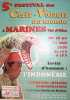
Marines est un festival un peu spécial. En semaine, ateliers, surtout pour les enfants, et travail des invités étrangers, indonésiens, indiens (Abdul), balinais, hong-kongais, avec relativement peu de spectateurs ou de cervolistes.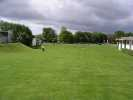
Le terrain est assez difficile, avec une taille réduite, des arbres sur 3 côtés sans compter le gymnase et diverses constructions...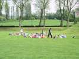
Mais toutes les écoles des environs et d'ailleurs (même des gens du voyage) y envoient leurs élèves fabriquer eux-mêmes leurs CVs, et pique-niquer sur le terrain à midi !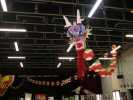
La grande salle est décorée des cerfs-volants des invités comme des aigles ou ce très long dragon chinois qui fait des allers-retours pour se loger...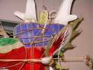
...et dont on peut admirer le travail de construction de la tête...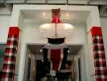
...ou le Janghan de Bali qui déroule sa queue majestueuse !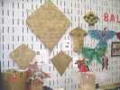
Sur les murs, des cerfs-volants de diverses nationalités, comme ces CVs en feuilles de manioc assemblées par des aiguilles de bambou !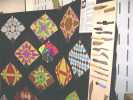
Abdul présente son matériel de travail en particulier des couteaux aiguisés comme des rasoirs, chacun adapté à un travail bien précis.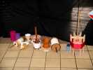
Il fabrique aussi des dévidoirs, accessoires fondamentaux du combat de cerfs-volants pour enrouler ou dérouler très vite... sans emmêler !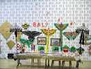
Bali présente ses cerfs-volants au mur et sur ce stand, abrité par deux ombrelles, sans doute de cérémonie ! Les papillons et les oiseaux balinais, peints à la main, plaisent beaucoup...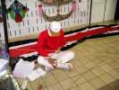
Il remonte son Bebean qui a été dépecé pour le transport en coupant les ficelles, car ces cerfs-volants ne sont pas normalement démontables !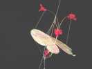
Il a aussi apporté 2 papillons messagers, dont l'un est recouvert de petites plumes ! Ce sont les antennes qui font ressort pour refermer les ailes une fois arrivé en haut...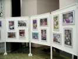
Karine présente aussi son exposition de photos prises en Inde au cours de ses nombreux voyages !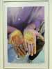
Faut-il plus admirer le courage de ces fabricants de Manjha aux mains crevassées et cisaillées (et colorées !) ou le talent du photographe ?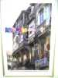
En Inde, on trouve des combattants partout (et plein les fils téléphoniques !) après un jour de fête, devant la pittoresque architecture d'Ahmedabad...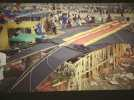
Pour informer les spectateurs, on projette aussi des diapos exotiques et surprenantes, qui révèlent les dimensions énormes du phénomène cerf-volant en Indonésie ou en Inde, comme cet immense Bebean sur sa carcasse de transport (à bras d'hommes...) !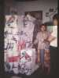
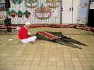
Notre balinais termine le montage du Bebean et son entoilage...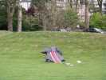
Dehors, dans le vent très puissant, la manipulation est difficile. On arme les arcs sonores (1 dessus, l'homme, un dessous, la femme) en installant les rubans vibrants.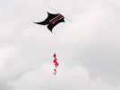
Et voilà, ça vole impeccablement, mais le Bebean souffre quand même un peu dans le vent solide et tourbillonnant...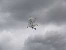
Il y a aussi quelques européens à bord, comme Emmanuel et ses chats...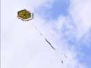
Et même un cerf-volant guatémaltèque d'une stabilité exemplaire, bien qu'il n'y ait pas de représentant de ce pays.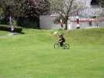
Un enfant a inventé le kite-bike, mais la surface est un peu faible pour créer des sensations fortes....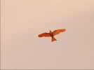
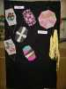 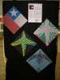 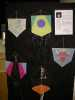 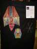
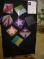 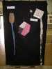 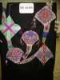
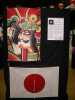 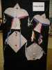 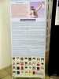 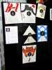
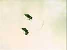
L'auteur de l'oiseau en bambou faisait aussi voler ce joli "mobile" de deux hirondelles quasi-vivantes qui résistait incroyablement au vent malgré sa finesse !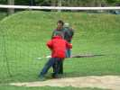
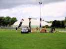
Les Hurricane sont venus aussi, c'est pas trop loin, et ont monté leur campement et des cerfs-volants, malgré le vent violent du samedi.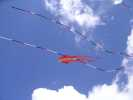
Ludo avait monté des Pyrodeltas pour meubler. Malgré les conditions difficiles, ils ont tenu l'air sans faillir jamais.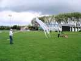
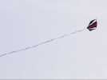
Dom, bien reposé, a sorti son grand Pipa, mais avec la queue stabilisatrice...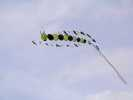
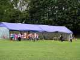
Le samedi, le barnum a été monté, avec toujours des ateliers pour enfants. Mais là, les CVs sont déjà montés, plus qu'à les peindre, et ils coûtent quelques sous. Mais ils volent toujours aussi bien, les CVs de Ludo dérivés de combattants mais pourvus d'une queue.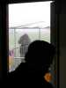
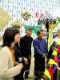
Et là, ouverture du festival par les autorités, avec fanfare des pompiers... dans la salle, bien sûr et tout le tralala ! Les représentants balinais ont revêtu le costume traditionnel pour l'occasion...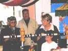
Ils font même un discours... en anglais.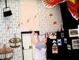
Il y avait aussi comme d'habitude le chinois champion de yoyo (un dans chaque main...) et Jim !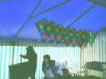
Dom a commencé à installer son stand sous le barnum, avec ses combattants en spi et carbone à la finition exemplaire...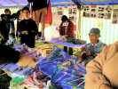
Le stand balinais proposait aussi ses oiseaux, ses papillons et divers gadgets...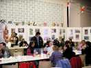
Le repas a commencé, mais un appel a retenti : "Venez tous vite, le barnum s'envole !". Et c'était vrai ! Il a fallu se cramponner à la toile et la démonter en urgence pendant que les stands déménageaient à vitesse supersonique ! Bon, ça ne nous a pas empêchés de revenir déjeuner !